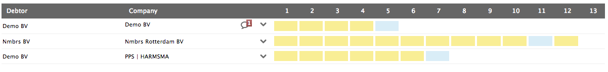

Dashlets
Dashlets are used to give an overview of all accountant procedures in the application.
Dashlets normal state
Dashlets click state
Details Page
Details page are located in activity area with a sidebar menu or step sidemenu. Is used to make a precise procedure and can be a landing page from a dashlet.
Here's some example:
Details page with table
Details page with tabs
Details page step sidemenu

Popups
Popups are small web pages that pop ups when a user hover some element that shows a grey background and ther cursor change from arrow to a hand. In this popups you can create, change and save detail options of the element.
Here's some example:
State one
State two
Dropdown
Dropdown allows to user needs to access a specific section or functionality of a website in a quick way regardless of hierarchy. Use the dropdown icon .dropdown-iconalways on the right side:
Here's some example:
Sidebar menu
Button dropdown
Accountant
Table item
Tables
Tables are used to organize data inside of rows and columns
Breadcrumbs
Breadcrumbs indicate the current page's location within a navigational hierarchy.

Tabs
The user needs to browse through a series of tabs without refreshing the page.
Sidemenu
The user needs to navigate among sections of a website, but space to show such navigation is limited. Every item that has secondary option, a dropdown arrom is applied on the right side od the item.
Signups
Signups are a form that new users register their id information when enter in the application for the first time. If they are already registered as a user, they nisert their user name and password to have access to a certain content inside the application.
Alerts
Provide contextual feedback messages for typical user actions with the handful of available and flexible alert messages.
Step Sidemenu
Step sidemenu is used when a final document needs a predefined values. Is a step by step procedure.